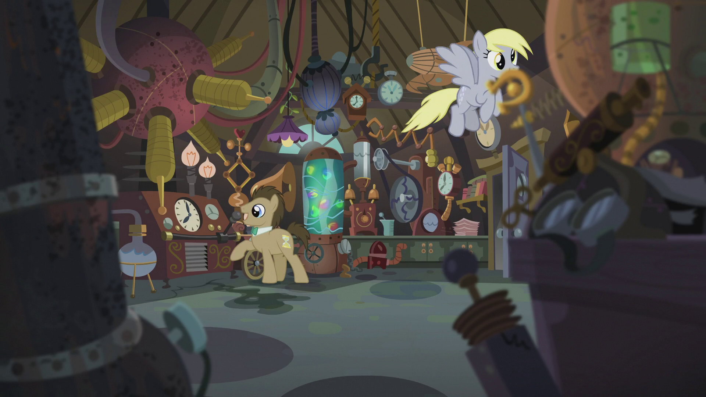

"The friendship problem is in...TARDIS? Where's Tardis?"
Pinkie Pie hops up and down, a big goofy grin on her face. "Oh, I LOVE crossovers! Give me oneeeeeee second!" She zooms out of the room. Five seconds later, Pinkie returns, pushing a confused brown earth pony and grey pegasus into the castle.
"So like I was saying, we went to Twilight's Castle, and then Applejack kicked the Friendship Map, and then we solved a bunch of puzzles, and then we went on a trip and found out we needed your super magical TARDIS and now you gotta help us and I KNOW you will because we're best friends and - "
The brown earth pony pushes Pinkie away. "Pinkie! Could you please slow down?"
"Nope!"
Using her magic, Twilight lifts Pinkie out of the way. "Sorry about that. She's...well, Pinkie Pie. Who are you?"
The stallion brushes his tie. "Quite alright. Legally, my name here is Doctor Whooves, but I prefer "The Doctor".
The grey pegasus raises her hoof. "And I'm his assistant! Derpy Hooves, at your service."
Doctor Whooves nods. "And we know all of you, of course. You've saved Equestria, like, a dozen times. How can we help?"
"The Friendship Map is saying we need to go to Tardis. Pinkie thinks you two know what that means?"
Derpy raises her hoof. "Oh, I get it! Let me explain. You see...actually, there's a lot. Why don't I explain while we head towards the TARDIS?"
* * *
"Let me get this straight," Twilight says. "You're a time-traveling alien?"
"Pretty much," Doctor Whooves says. "Some time ago, I was running away from some Weeping Angels. Scary creatures, really don't want to cross them. The TARDIS crash landed in Ponyville, and I regenerated into this form. Derpy was the first pony I met. She helped me get used to Equestria, and now we go on adventures."
"That's right!" Derpy says. "You didn't need to go to Tardis. You need to use the TARDIS to time travel to another time!"
"...You're kidding me," Twilight says, as she facehoofs. "The universe is making me time travel, AGAIN? What, were the last two times not enough?"
"Ahh, good old magical artifacts. Always like to play a joke," the Doctor says, as he pushes open the door of a blue police box parked in a grassy field. "Welcome to the TARDIS! Don't worry, we'll all fit."

Applejack whistles. "Wow. It's bigger on the inside!"
Doctor Whooves smiles. "Oh, I love when they say that. Now, I'm happy to take you wherever and whenever you need to go. I've never been sent on a friendship quest before! Just one problem. The TARDIS isn't working at the moment. Our last adventure got a bit hairy, and we barely made it back here. Some key components of the TARDIS shattered across space. I can re-route around some of them, but I'll need at least four to make the TARDIS fit for travel."
Twilight sighs. "Of course. Of course. Alright, how can we help?"
The Doctor pulls out a screwdriver-shaped object. "Let me take a look." He activates it, and it emits a short buzzing sound. He nods. "Right. It looks like the shattered pieces of the TARDIS have latched themselves onto ponies around town. Why don't you talk to them? If you help them, it should release the TARDIS components we need."
"Sounds like a plan. Alright girls, let's split up. Meet back here when you're done."